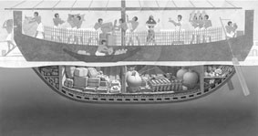

Non sappiamo quel che successe durante gli ultimi momenti di navigazione della nave che affondò sulla costa sud-occidentale della Turchia a Uluburun (che si può approssimativamente tradurre con «grande promontorio») nel 1300 a.C. circa. Si ribaltò durante una tempesta? Andò a picco dopo aver urtato contro un oggetto sommerso? L’equipaggio la affondò intenzionalmente per evitare di essere preso prigioniero dai pirati? Gli archeologi non lo sanno, né sono sicuri dell’origine del vascello, della sua destinazione finale o dei suoi scali intermedi, ma sono riusciti a recuperare il suo carico, il che fa pensare che questa nave dell’Età del Bronzo stesse navigando dal Mediterraneo orientale all’Egeo.1
Un giovane pescatore di spugne turco scoprì il relitto nel 1982. Raccontò di aver visto, durante una delle sue prime immersioni, dei «biscotti di metallo con le orecchie» che giacevano sul letto sabbioso. Il suo capitano capì che la descrizione si accordava con quella di un lingotto a pelle di bue dell’Età del Bronzo (chiamato così perché la sua forma ricorda il pellame di un bue teso a seccare). Gli archeologi dell’Institute of Nautical Archeology (INA), all’Università del Texas, gli fecero vedere delle immagini di oggetti di quel tipo e gli dissero di fare attenzione se ne vedeva altri.
Gli archeologi erano guidati da George Bass, che era stato un pioniere nel campo dell’archeologia sottomarina negli anni sessanta, mentre era ancora studente all’Università della Pennsylvania. All’epoca, le attrezzature da immersione sottomarina con respiratore «scuba» (self-contained underwater breathing apparatus) erano ancora relativamente recenti e gli scavi di Bass sul relitto di Capo Gelidonya al largo della costa turca era stato il primo effettuato su un relitto dell’Età del Bronzo condotto da archeologi professionisti in quella regione.
Quando nel 1967 apparvero le pubblicazioni ufficiali degli scavi, i risultati di Bass a Capo Gelidonya, in cui concludeva che il relitto era una nave cananea in rotta verso l’Egeo, naufragata verso il 1200 a.C., incontrarono lo scetticismo generale.2 Quasi tutti gli archeologi stentavano a credere che esistesse un commercio tra l’Egeo e il Medio Oriente in tempi così remoti, più di tremila anni fa, a prescindere dal fatto che i Cananei possedessero perizia e competenza sufficienti per avventurarsi nel Mediterraneo. Bass, a questo punto della sua carriera, scommise di trovare un’altra nave dell’Età del Bronzo e di fare altri scavi, per poter dimostrare la plausibilità delle sue conclusioni. E il suo momento giunse negli anni ottanta, con il relitto di Uluburun, che risaliva approssimativamente al 1300 a.C., circa cento anni più antico della nave di Capo Gelidonya.
Attualmente si pensa che la nave di Uluburun possa aver iniziato il suo viaggio in Egitto o a Canaan (forse ad Abu Hawam, in quella che è l’attuale Israele) e avesse fatto scalo a Ugarit, nel nord della Siria, e forse anche in un porto di Cipro. La nave si era poi diretta a ovest, attraverso l’Egeo, seguendo la linea costiera meridionale dell’Anatolia. Durante il viaggio, l’equipaggio aveva preso a bordo carichi di vetro grezzo, anfore per lo stoccaggio di orzo, resina, spezie e forse vino e, fatto più prezioso di tutti, quasi una tonnellata di stagno grezzo e dieci tonnellate di rame grezzo, che dovevano essere fusi per formare il più straordinario dei metalli, il bronzo.
In base al carico della nave, siamo ragionevolmente certi che stava viaggiando verso ovest partendo da Levante, probabilmente destinata a un porto dell’Egeo, forse uno dei due o tre porti sulla terraferma greca che servivano la capitale Micene, o forse una delle altre città più importanti della zona, come Pilo, sul continente, o Kommos, o perfino Cnosso, sull’isola di Creta. Il semplice fatto che ci fosse un’altra nave che veleggiava da est a ovest durante la tarda Età del Bronzo era sufficiente a confermare le teorie di Bass e a modificare completamente le teorie degli studiosi sulla portata del commercio di più di tremila anni fa. Oggi sono state trovate tre navi dell’Età del Bronzo, ma il relitto di Uluburun resta il più grande e il più ricco, oltre a essere quello su cui gli scavi sono stati più assidui.
Continuano a rimanere sconosciuti i proprietari e i finanziatori della nave. Si potrebbe speculare, dando spiegazioni diverse quanto alle origini del vascello e alla sua destinazione ultima. Forse si trattava di un’impresa commerciale, una nave inviata dal Medio Oriente o dai mercanti egizi, magari con la benedizione del faraone egizio o del re cananeo. Oppure era stata inviata direttamente da un faraone o da un re, come omaggio da un sovrano all’altro, come era accaduto spesso durante l’epoca di Amarna, alcuni decenni prima. Forse la nave era stata mandata dai Micenei per una «spedizione commerciale» nel Mediterreano orientale ed era affondata durante il viaggio di ritorno. I mercanti a bordo potrebbero aver acquistato le materie prime e altri beni non disponibili in Grecia, come lo stagno e il rame, come pure la tonnellata di resina di terebinto (dell’albero del pistacchio), che poteva essere utilizzata per il profumo prodotto a Pilo, in Grecia, e poi riportata via mare in Egitto e in tutto il Mediterraneo orientale. Evidentemente non mancano gli scenari più fantasiosi. Se i Micenei fossero stati i destinatari, allora è possibile che aspettassero con impazienza il carico della nave, perché conteneva abbastanza metallo grezzo da equipaggiare un esercito di trecento uomini con spade, scudi, elmi e armature di bronzo, oltre ad avorio prezioso e altri articoli esotici. Chiaramente, quando la nave affondò, quel giorno lontano del 1300 a.C., ci fu qualcuno che perse un’immensa fortuna.

Figura 9
Ricostruzione della nave di Uluburun (Rosalie Seidler/National Geographic Stock. Per gentile concessione della National Geographic Society).
La nave di Uluburun affondò in acque profonde; la poppa si trova ancora a 40 metri di profondità, con il resto della nave che si inclina verso il basso, fino a circa 50 metri di profondità. Immergersi a 40-50 metri di profondità è pericoloso, oltre i limiti di un’immersione sicura. A quella profondità, i sub che aderiscono alle federazioni internazionali possono fare solo due immersioni al giorno, di venti minuti ciascuna. Là sotto, aumentano i livelli di gas che possono avere effetto narcotico. Bass ha detto che lavorando a quelle profondità ci si sente come se si avesse bevuto un paio di Martini, e ogni immersione o ogni movimento sott’acqua devono pertanto essere accuratamente pianificati prima di tuffarsi.
Nel corso di quasi dodici stagioni, dal 1984 al 1994, l’équipe ha fatto immersioni sul relitto più di ventiduemila volte, senza avere mai incidenti di gravi entità, il che dimostra la prudenza usata, anche grazie al fatto che le immersioni erano controllate da un ex membro della Marina degli Stati Uniti.3 Il risultato finale è stato una mappa completa di un relitto antico e del suo carico, accurata al millimetro, come gli scavi compiuti a terra, malgrado la profondità in cui si trovava il reperto. Con le immersioni si sono anche recuperati migliaia di oggetti, che sono oggi ancora sotto indagine.
La nave in sé era originariamente lunga quindici metri. Era ben costruita, con gli assi e la carena in cedro del Libano e con un incastro tenone/mortasa per lo scafo.4 Il primo relitto noto fino ad allora nel Mediterraneo che avesse fatto uso della tecnica tenone/mortasa era la nave di Kyrenia, un relitto mercantile trovato al largo di Cipro, di oltre mille anni posteriore (300 a.C.).
Durante gli scavi fu particolarmente difficile raggiungere e portare alla superficie i lingotti di rame, che erano più di 350. Nel corso dei tremila anni in cui erano rimasti sott’acqua, impilati in quattro file separate con un incrocio a spina di pesce, molti si erano rovinati e si trovavano in uno stato di grande fragilità. Alla fine i conservatori dell’équipe archeologica che lavoravano con Bass dovettero utilizzare un nuovo tipo di colla: un adesivo che veniva iniettato sui resti del lingotto, e che nel corso di un anno si solidificava e si induriva a contatto con l’acqua. La colla alla fine saldava insieme le diverse parti del lingotto decomposto, in modo che questo poteva infine essere trasportato intatto in superficie.
A bordo c’era molto altro oltre ai lingotti di rame. Venne fuori che il carico sulla nave di Uluburun consisteva di un assortimento incredibile di merci, un vero e proprio manifesto del panorama commerciale internazionale dell’epoca. In tutto, c’erano prodotti di almeno sette paesi e imperi diversi. Oltre al carico originario di dieci tonnellate di rame cipriota, una tonnellata di stagno e una tonnellata di resina di terebinto, c’erano anche due dozzine di ceppi di ebano della Nubia; quasi duecento lingotti di vetro grezzo di Mesopotamia, per lo più colorati di blu scuro, o azzurri, porpora e perfino di una sfumatura ambrata color miele; circa 140 anfore di stoccaggio cananee di due o tre taglie diverse, che contenevano resina di terebinto, resti di grappoli d’uva, melograni e fichi, come pure spezie, come il coriandolo e il sommacco; vasellame nuovo di zecca da Cipro e da Canaan, che comprendeva lampade a olio, ciotole, boccali e anfore; scarabei sacri d’Egitto e sigilli cilindrici da vari parti del Medio Oriente; spade e pugnali da Italia e Grecia (alcuni dei quali probabilmente erano appartenuti ai membri dell’equipaggio o ai passeggeri), compresa un’impugnatura intarsiata di ebano e avorio; e perfino uno scettro-mazza di pietra dei Balcani. C’erano anche gioielli d’oro, con pendenti e un calice d’oro; scrigni per i cosmetici a forma di anitra; ciotole di rame, bronzo e stagno e altri contenitori; ventiquattro ancore di pietra; quattordici pezzi di avorio di ippopotamo e una zanna d’elefante; e una statua di sei pollici di una divinità cananea di bronzo, coperta di placche d’oro (che, se era la divinità protettrice della nave, non portò certamente a buon fine il suo celeste compito).5
Lo stagno probabilmente proveniva dalla regione del Badakhshan, in Afghanistan, uno dei pochi luoghi dove lo si poteva estrarre nel secondo millennio a.C. I lapislazzuli presenti a bordo provenivano dalla stessa regione e avevano viaggiato per migliaia di miglia via terra prima di essere caricati sulla nave. Molti dei pezzi, come un sigillo cilindrico, erano piccoli e facili da perdersi durante gli scavi, soprattutto usando i grandi aspirapolvere che tolgono la sabbia che copre i resti. Il fatto che siano stati comunque ritrovati è la dimostrazione dell’abilità degli archeologi sottomarini che hanno compiuto gli scavi, guidati prima da Bass e poi dal suo successore Cemal Pulak.
Uno degli oggetti più piccoli trovati a bordo della nave è anche uno dei più importanti: si tratta di uno scarabeo sacro egizio in oro massiccio. Già raro di per sé, era reso ancora più inconsueto dai geroglifici che vi erano incisi, nei quali si legge il nome di Nefertiti, moglie del faraone eretico Akhenaton. Il nome è scritto sullo scarabeo come «Nefer-neferu-aton»; è una grafia che Nefertiti utilizzò soltanto durante i primi cinque anni del suo regno, all’epoca in cui il marito era all’apice della sua riforma religiosa che condannava ogni divinità egizia tranne Aton, il disco del sole, che lui, e lui solo, poteva adorare direttamente.6 Gli archeologi si sono serviti dello scarabeo sacro per dare una data alla nave, dal momento che non poteva essere stato costruito prima che Nefertiti fosse giunta al potere nel 1350 a.C.
Gli archeologi sono stati in grado di attribuire una data al naufragio della nave anche con altri tre metodi. Un metodo faceva uso del carbonio 14, o radiocarbonio, applicato ai ramoscelli e alle frasche che erano utilizzati in coperta. Un altro usava la dendrocronologia (il calcolo degli anelli degli alberi), applicata alle travi di legno che costituivano lo scafo. Il terzo era dato dal vasellame miceneo e minoico trovato a bordo, che secondo gli specialisti risaliva alla fine del XIV secolo a.C. La combinazione di questi quattro metodi indipendenti di datazione indica il 1300 a.C. circa.7
A bordo sono stati anche trovati frammenti di una piccola tavoletta di legno, originariamente munita di cardini d’avorio, che si sono conservati in un’anfora, forse rimasta a galla mentre la nave affondava. Ricorda l’«apportator di chiuse funeste cifre» di Omero (Iliade, VI, 209-210), ed è più vecchia di oltre cinquecento anni rispetto alle analoghe tavolette che sono state trovate a Nimrud in Iraq. È possibile che un tempo la tavoletta abbia contenuto una registrazione dell’itinerario della nave, o forse era il documento del carico delle merci. Tuttavia, la cera su cui era incisa la scrittura nei due lati è scomparsa molto tempo fa, senza lasciare segni di quel che c’era scritto.8 È impossibile quindi dire se il carico fosse un omaggio regale, forse dal re d’Egitto al re di Micene, o se appartenesse a un mercante che esportava merci nei principali porti del Mediterraneo. Come è stato ipotizzato sopra, avrebbe potuto anche trattarsi di acquisti fatti durante un viaggio commerciale a lunga distanza, perché le materie prime a bordo sono compatibili con quello che serviva agli artigiani e ai mercanti dei palazzi micenei (come quello di Pilo) per creare gli articoli alla moda, oli e profumi, gioielli e collane di vetro.
Forse non sapremo mai chi organizzò il viaggio della nave di Uluburun, la sua destinazione e il motivo della spedizione, ma è chiaro che esso rappresenta un microcosmo del commercio e dei contatti internazionali che avvenivano nel Mediterraneo orientale, e in tutto l’Egeo, durante i primi anni del XIII secolo a.C. Non solo si trattava di merci provenienti da almeno sette regioni diverse, ma, a giudicare dai beni personali trovati sul relitto dagli archeologi, c’erano almeno due micenei a bordo, mentre la nave, a quanto pare, era cananea. Con ogni evidenza questa nave non appartiene a un mondo in cui le civiltà, i regni e i feudi erano separati e isolati, ma a un universo di commercio, migrazione, diplomazia e purtroppo di guerra, in cui tutto era interconnesso. Si tratta davvero della prima epoca globalizzata.
Circa quarant’anni dopo il naufragio della nave di Uluburun, fu composto un testo che elencava alcuni dei contenuti di una nave simile, mandata da un mercante di nome Sinaranu da Ugarit, nel nord della Siria, fino all’isola di Creta. Si trattava di un documento ufficiale, scritto in accadico su una tavoletta d’argilla, con il sistema di scrittura cuneiforme, in cui si affermava che, quando la nave di Sinaranu fosse tornata da Creta, il proprietario non avrebbe pagato le tasse al re. Nella parte più significativa del Testo di Sinaranu, come viene chiamato, si legge quanto segue: «Dal giorno presente Ammistamru, figlio di Niqmeqa, re di Ugarit, dispensa Sinaranu, figlio di Siginu ... Non deve consegnare al palazzo il suo [grano], la sua birra, il suo olio d’[oliva]. Quando arriva da Creta, la sua nave ne è esentata».9
Da altre fonti sappiamo che Sinaranu era un ricco mercante di Ugarit (il termine specifico per mercante in accadico era tamkar), che visse e prosperò nell’epoca in cui regnava a Ugarit Ammistamru II. In base alle nostre recenti conoscenze delle date del regno di Ammistamru II (1260-1235 a.C. circa), sembra che Sinaranu abbia inviato la sua nave da Ugarit a Creta, e ritorno, nel 1260 a.C. circa. Non conosciamo il contenuto effettivo del carico riportato da Creta, tranne il fatto che c’erano grano, birra e olio d’oliva, ma per lo meno questa è la conferma che, verso la metà del XIII secolo a.C, esistevano contatti commerciali diretti tra il nord della Siria e Creta. Abbiamo quindi il nome di una persona coinvolta direttamente in transazioni economiche e mercantili internazionali avvenute più di tremiladuecento anni fa ed è molto probabile che la nave di Uluburun e quella che apparteneva a Sinaranu non fossero molto diverse, né nella costruzione né nel carico che portavano.
Sappiamo che Sinaranu non era l’unico a mandare e a ricevere navi e carichi commerciali durante questo periodo, né era il solo mercante a cui era concessa l’esenzione dalle tasse. Ammistamru II rilasciò una dichiarazione simile per altri imprenditori le cui navi salpavano per l’Egitto, l’Anatolia e altrove: «Da questo giorno in poi, Ammistamru, figlio di Niqmeqa, re di Ugarit, ... [testo interrotto] ... Bin-yasuba e Bin-? ... e i suoi figli per sempre, dai viaggi in Egitto e i viaggi a Hatti e nella terra di Z (?) sino al palazzo e al sovrintendente del palazzo, non hanno bisogno di fare alcuna relazione».10
All’epoca in cui erano attivi Sinaranu e gli altri mercanti, Ugarit era sotto il controllo degli Ittiti di Anatolia, dei quali era uno stato vassallo. Era stato così sin dall’epoca di Šuppiluliuma I, verso la metà del XIV secolo, quando era stato firmato un trattato che elencava dettagliatamente gli obblighi di Ugarit come vassallo degli Ittiti.11 Il controllo degli Ittiti si era esteso molto a sud, nella regione di Qadeš, e ancora più a sud in Siria, ma non era andato oltre. Gli Egizi avevano tentato di ostacolare gli sforzi espansionistici degli Ittiti. Una grande battaglia tra Egizi e Ittiti fu infine combattuta nel sito di Qadeš nel 1274 a.C., quindici o vent’anni prima che Sinaranu mandasse la sua nave a Creta. Questa battaglia è una delle grandi battaglie dell’antichità e uno dei primi casi del mondo antico in cui fu deliberatamente utilizzata la disinformazione come misura per confondere il nemico.
La battaglia di Qadeš fu combattuta tra Muwattalli II di Hatti, che stava tentando di espandere l’impero ittita più a sud nella terra di Canaan, e Ramses II di Egitto, che era deciso a stabilire il confine a Qadeš, dove infine rimase stabile per parecchi decenni. Anche se non sappiamo la versione della storia degli Ittiti, conosciamo virtualmente ogni dettaglio della battaglia e del suo esito, perché la versione degli Egizi è registrata in due modi diversi e in cinque templi diversi in Egitto: il Ramesseum (il tempio mortuario di Ramses II, vicino alla Valle dei Re) e i templi di Karnak, Luxor, Abydos e Abu Simbel. La versione più breve, che è associata a un bassorilievo che raffigura la battaglia, è conosciuta come «Relazione» o «Bollettino». La versione più lunga è denominata «Poema» o «Relazione letteraria».12
Sappiamo che la battaglia fu particolarmente cruenta e che entrambe le parti avrebbero potuto vincere in un momento o nell’altro. Sappiamo anche che finì con un’impasse e che il conflitto tra le due potenze alla fine si risolse con la firma di un trattato di pace.13
La parte più drammatica di questo scontro avvenne dopo che gli Ittiti mandarono due uomini (beduini, o «Shoshu», come viene detto nella relazione egizia) per spiare l’esercito egizio, ma in modo talmente sfacciato che gli uomini vennero catturati quasi subito. Forse sotto tortura, le spie rivelarono false informazioni (forse uno dei primi esempi documentati nella storia umana) e dissero agli Egizi che l’esercito ittita non era ancora nelle vicinanze di Qadeš, bensì molto più a nord, nella regione di Amurru, nel nord della Siria. Dopo aver appreso queste notizie e senza neanche tentare di cercare una conferma, Ramses II cavalcò a grande velocità con la prima delle sue divisioni – la divisione Amon –, con l’intento di raggiungere Qadeš in anticipo sugli Ittiti.14
In realtà gli Ittiti erano già a Qadeš, e avevano compattato le truppe a nord e a est della città, all’ombra delle mura, dove non potevano essere visti dall’esercito egizio in avvicinamento da sud. Quando il reggimento di punta delle truppe egizie si accampò a nord della città, gli uomini di Ramses catturarono altre due spie ittite e questa volta appresero la verità, ma era troppo tardi. L’esercito ittita aggirò rapidamente le mura della città in senso orario e attaccò la seconda divisione egizia, quella conosciuta con il nome di Ra, che fu colta di sorpresa e quasi completamente annientata. Quel che rimase della divisione Ra, dispersa e smembrata, fuggì a nord, rincorsa da tutto l’esercito ittita e raggiunse Ramses e gli uomini della divisione Amon nel loro accampamento, prima di opporre resistenza.15
La battaglia divampò da entrambi i lati. Sappiamo che a un certo punto l’esercito egizio era vicino alla disfatta e Ramses stesso stava per essere ucciso, ma riuscì da solo a salvare se stesso e i suoi uomini. La cronaca incisa sulle mura del tempio egizio dichiara:
Allora Sua Maestà si lanciò al galoppo e assalì il gruppo compatto di coloro che erano caduti a Hatti, completamente da solo e senza nessuno con lui ... E trovò 2500 carri che lo circondavano sul lato esterno, che consistevano in tutti i caduti di Hatti con tutti i paesi stranieri che erano con loro.
Poi il discorso passa alla prima persona, riferita al faraone stesso:
Ti ho chiamato, Padre mio Amun, quando ero nel bel mezzo della moltitudine che non conoscevo ... ho trovato che Amun veniva quando lo chiamavo; mi diede la sua mano e mi rallegrai … Tutto quello che feci avvenne realmente ... tiravo con la mano destra e facevo prigionieri con la sinistra ... ho trovato 2500 carri, e io ero in mezzo a loro, sporgendomi dal mio cavallo. Nessuno di loro ha trovato la sua mano per combattere ... ho fatto in modo che si inabissassero nell’acqua come fanno i coccodrilli, uno sull’altro con il volto in giù. Ne ho uccisi tra loro quanti volevo.16
Anche se il racconto della prodezza è sicuramente esagerato, tanto più se compiuta completamente da solo (il faraone indubbiamente ebbe un aiuto di qualche tipo), il numero di cui si parla potrebbe non discostarsi molto dalla verità, perché in un altro punto dell’iscrizione si dice che l’esercito ittita era composto di 3500 carri, 37000 fanti e un totale di 47500 soldati.17 Malgrado la probabile esagerazione, dalle immagini che accompagnano il testo e dall’esito della battaglia è chiaro che Ramses II e le prime due divisioni egizie seppero opporre resistenza, finché non arrivarono in soccorso altre due divisioni, che raggiunsero il campo di battaglia e si opposero all’esercito ittita.18
In definitiva la battaglia si risolse con un’impasse e il confine tra le due potenze rimase fissato a Qadeš, e non fu più cambiato né messo in discussione. Quindici anni dopo, nel novembre/dicembre 1259 a.C., circa nello stesso periodo in cui Sinaranu stava mandando la sua nave a Creta da Ugarit, tra Ramses II e l’allora re ittita Hattušili III (perché Mutwattalli II era morto due anni dopo la battaglia) fu firmato un trattato di pace (uno tra i meglio conservati e tra i più studiati dell’antichità). Noto come il «Trattato d’argento», quest’accordo è sopravvissuto in numerose copie, anche perché ne erano state fatte due versioni, una da parte degli Ittiti e una da parte degli Egizi. La versione ittita, originariamente scritta in accadico e incisa su una tavoletta d’argento massiccio, fu inviata in Egitto, dove venne tradotta in lingua egizia e copiata sulle mura del Ramesseum e sul tempio di Amon a Karnak. Analogamente, la versione egizia fu tradotta in accadico e iscritta su una tavoletta d’argento, poi mandata a Hattuša, dove gli archeologi l’hanno scoperta solo pochi decenni fa.19 La versione ittita incisa sulle mura dei templi egizi inizia così:
[I tre inviati regali d’Egitto] arrivarono ... insieme al primo e al secondo inviato regale di Hatti, Tili-Teshub e Ramose, e l’inviato di Karkemish, Yapusili, che portava la tavoletta d’argento che il grande re di Hatti, Hattušili, voleva fosse offerta al Faraone, con l’intermediazione del suo inviato Tili-Teshub e del suo inviato Ramose, per chiedere la pace da parte di Sua Maestà al re del Sud e del Nord dell’Egitto, Usimare Setepenra, figlio di Ra, Ramses II.20
Tredici anni dopo, probabilmente in seguito alla visita in Egitto, Ramses II sposò una delle figlie di Hattušili con una sfarzosa cerimonia regale, cementando così il trattato e i loro rapporti:21
Allora egli (Hattušili) fece in modo che fosse portata la sua figlia maggiore, con un tributo magnifico (esibito) davanti a lei, di oro, argento e rame in abbondanza, schiavi, un numero illimitato di coppie di cavalli, bestiame, capre e pecore per decine di migliaia – illimitati erano anche i prodotti che portavano al re del Sud e del Nord dell’Egitto, Usimare Setepenra, Figlio di Ra, Ramses II. Poi uno venne a informare Sua Maestà dicendo: «Vedi, il grande governatore di Hatti ha mandato la sua figlia maggiore, con tributi di ogni sorta ... la principessa di Hatti, insieme a tutti i maggiorenti del signore di Hatti».22
Fu probabilmente un bene che Ittiti ed Egizi avessero stipulato un trattato di pace smettendo di lottare l’uno contro l’altro, perché era necessario rivolgere l’attenzione a due altri avvenimenti che ebbero probabilmente luogo proprio intorno all’anno 1250 a.C. Anche se si tratta di eventi leggendari e deve ancora essere dimostrato che siano realmente avvenuti, la loro aura continua ancora fino ai giorni nostri: in Anatolia, gli Ittiti probabilmente parteciparono alla guerra di Troia, mentre gli Egizi ebbero a che fare con l’Esodo ebraico. Prima di parlarne, però, dobbiamo delineare la scena.
Circa nello stesso periodo della battaglia di Qadeš, gli Ittiti erano occupati su un secondo fronte nell’Anatolia occidentale, dove tentavano di contenere sudditi ribelli le cui attività, a quanto pare, erano sostenute dai Micenei.23 Potrebbe essere uno dei primi esempi di un governo che si impegna deliberatamente in attività destinate a indebolire un altro governo (si pensi al sostegno iraniano agli Hezbollah in Libano, tremiladuecento anni dopo).
È durante il regno del re ittita Muwattalli II, tra l’inizio e la metà del XIII secolo a.C., che per la prima volta veniamo a sapere, dai testi conservati nell’archivio di stato della capitale Hattuša, di un suddito ittita rinnegato, di nome Piyamaradu, il quale aveva tentato di destabilizzare la situazione politica nella regione di Mileto, nell’Anatolia occidentale. Un uomo chiamato Manapa-Tarhunta era già riuscito a sconfiggere il re di uno stato vassallo degli Ittiti nella stessa regione. Si pensa che Piyamaradu abbia agito per conto degli Ahhiyawa o in combutta con loro (i Micenei dell’Eta del Bronzo).24
Le attività sovversive di Piyamaradu continuarono durante il regno del re ittita successivo, Hattušili III, alla metà del XIII secolo a.C., come sappiamo dalla corrispondenza chiamata dagli studiosi «Lettera di Tawagalawa». Il re ittita mandò la lettera a un re degli Ahhiyawa, che non viene nominato, a cui si rivolge come «grande re» e «fratello», il che implica un rapporto tra pari. Abbiamo già visto che termini simili erano utilizzati quando i faraoni egizi Amenofi III e Akhenaton scrivevano ai re di Babilonia, dei Mitanni e dell’Assiria circa un secolo prima. L’interpretazione di questi testi ha gettato una nuova luce sulla situazione globale nel mondo egeo e nel Medio Oriente.25
La lettera di Tawagalawa si occupa delle attività di Piyamaradu, che continuava a fare irruzioni nel territorio ittita dell’Anatolia e che, come ci è stato detto, si era garantito il diritto di asilo nel territorio Ahhiyawa, verso il quale si era diretto con le sue navi (forse in un’isola al largo della costa occidentale dell’Anatolia).26 Da quella che una volta era la terza pagina/tavoletta della lettera (le prime due sono mancanti), abbiamo notizie su Tawagalawa in persona, che viene identificato come il fratello di un re Ahhiyawa dell’Anatolia occidentale di quel periodo, che reclutava uomini ostili agli Ittiti. Curiosamente, il documento indica che le relazioni tra Ittiti e Micenei in passato erano state migliori, e veniamo a sapere che Tawagalawa aveva cavalcato («montato il carro») assieme al conducente personale del re ittita.27
La lettera si riferisce anche a un diverbio tra Micenei e Ittiti in relazione a una regione nota come Wilusa, localizzata nell’Anatolia nord-occidentale. Abbiamo parlato di questa regione in merito alla rivolta di Assuwa, che aveva avuto luogo duecento anni prima: sembra che gli Ittiti e i Micenei un tempo fossero in disaccordo su quel territorio, che la maggior parte degli studiosi identificano con Troia o con la regione della Troade. Considerata la data sulla lettera – la metà del XIII secolo – è ragionevole chiedersi se ci sia un legame con le successive leggende greche che riguardano la guerra di Troia.28
La leggenda della guerra di Troia, tradizionalmente raccontata dal poeta greco cieco Omero nell’VIII secolo a.C. e integrata dal cosiddetto Ciclo epico (frammenti di altri poemi epici oggi perduti) e da successive tragedie, è ampiamente nota. Paride, il figlio del re Priamo di Troia, salpò dall’Anatolia nord-occidentale verso il continente greco, in missione diplomatica presso il re Menelao di Sparta. Mentre si trovava a Sparta, Paride si innamorò di Elena, la bella moglie di Menelao. Quando ritornò in patria, Elena lo seguì, volontariamente, secondo i Troiani, oppure con la forza, come sostenevano i Greci. Infuriato, Menelao persuase suo fratello Agamennone, re di Micene e grande condottiero dei Greci, a inviare contro Troia una flotta di mille navi e un esercito di cinquantamila uomini per riportare Elena a casa. Alla fine, dopo una guerra durata dieci anni, i Greci uscirono vittoriosi, Troia venne saccheggiata, quasi tutti gli abitanti furono uccisi ed Elena fece ritorno a Sparta da Menelao.
Ci sono evidentemente molte domande senza risposta. C’è stata davvero la guerra di Troia? Troia è esistita realmente? Quanta parte di verità c’è dietro alla narrazione di Omero? Elena aveva davvero un viso di straordinaria bellezza capace di «far salpare mille navi»? La guerra di Troia è stata combattuta sul serio a causa dell’amore di un uomo per una donna... o si trattava di un semplice pretesto per dichiarare una guerra condotta per ben altre ragioni – per la terra, per il potere o per la gloria? Neppure gli antichi Greci sono sicuri della data della guerra: ci sono almeno tredici congetture diverse fornite dagli autori antichi.29
Quando Heinrich Schliemann andò a scavare nel sito di Troia, a metà del XIX secolo, gli studiosi pensavano che la guerra di Troia fosse solo una leggenda e che la città di Troia non fosse mai esistita. Schliemann voleva dimostrare che avevano torto. Con grande sorpresa di tutti, riuscì nel suo intento. La storia è stata raccontata molte volte e quindi qui non la ripeteremo nel dettaglio.30 Basti dire che l’archeologo tedesco trovò ben nove città, una sopra l’altra, nel sito di Hisarlik, ora accettato da quasi tutti gli studiosi come l’effettiva collocazione dell’antica Troia. Non fu tuttavia in grado di determinare quale delle nove città fosse la Troia di Priamo. Dopo i primi scavi di Schliemann ci sono state numerose spedizioni, tra cui quella dell’architetto Wilhelm Dörpfeld, di Carl Blegen dell’Università di Cincinnati negli anni trenta, poi di Manfred Korfmann e, infine, di Ernst Pernicka dell’Università di Tubinga, a partire dalla fine degli anni ottanta e fino a oggi.
La distruzione della sesta città – Troia VI – è ancora oggetto di discussione. Inizialmente datata intorno al 1250 a.C., fu probabilmente distrutta un po’ prima, verso il 1300 a.C.31 Era una città prospera, con oggetti importati dalla Mesopotamia, dall’Egitto e da Cipro, come pure dalla Grecia micenea. Era anche quella che si potrebbe chiamare una «periferia problematica», cioè una terra situata al confine tra il mondo miceneo e l’impero ittita, e quindi in un punto strategico, nel bel mezzo di due delle massime potenze dell’Età del Bronzo.
Dörpfeld credeva che i Micenei avessero conquistato la città e l’avessero incendiata fino alle fondamenta, e che fosse stato proprio questo l’evento alla base della narrazione epica di Omero. Blegen, che organizzò gli scavi molti decenni dopo, non era d’accordo e pubblicò quella che secondo lui era la prova inconfutabile del fatto che la distruzione della città era avvenuta a causa di un terremoto. La sua argomentazione includeva prove dirette, come la caduta delle mura fuori asse e il crollo delle torri, ma anche prove «negative», dal momento che non poté trovare frecce, spade, né alcun resto che facesse pensare a uno stato di belligeranza prolungata.32 In realtà, oggi è chiaro che il tipo di danneggiamento strutturale che Blegen poté attestare era simile a quello visto in molti altri siti dell’Egeo e del Mediterraneo orientale, compresi Micene e Tirinto sul continente greco. Questi terremoti della tarda Età del Bronzo, però, non avvennero nello stesso momento, come vedremo più avanti.
Blegen in effetti pensava anche che la Troia di Priamo fosse probabilmente la successiva, Troia VIIA. Ma quella città fu probabilmente distrutta nel 1180 a.C. e potrebbe essere stata invasa dai Popoli del Mare anziché dai Micenei, anche se non vi è alcun dato certo al momento. Per ora abbandoniamo questa storia, ma la ritroveremo nel prossimo capitolo, quando discuteremo gli avvenimenti del XII secolo a.C.
Ritorniamo a Micene sul continente greco: le sue imponenti mura fortificate, oggi ancora visibili, furono erette verso il 1250 a.C., più o meno nello stesso periodo in cui erano stati condotti altri progetti strutturali (forse misure difensive), tra cui una galleria sotterranea che portava a una sorgente, a cui gli abitanti potevano avere accesso senza dover abbandonare la protezione offerta dalla città.
La famosa Porta dei Leoni fu costruita all’ingresso della cittadella nello stesso periodo, come parte di una nuova cinta muraria fortificata attorno alla città. Si trattava solamente di misure protettive per la città oppure di un’esibizione di potere e di prosperità? Le mura fortificate e la Porta dei Leoni furono costruite utilizzando enormi blocchi di pietra, così grandi che oggi le mura vengono chiamate «mura ciclopiche». I Greci pensavano che soltanto i leggendari Ciclopi, con la loro forza bruta, avrebbero potuto avere la forza di collocare i blocchi di pietra in quella posizione.
È curioso che un’architettura simile, con le gallerie a volta e i tunnel segreti che conducono a sistemi idrici sotterranei, si trovi non solo nei siti micenei, come Micene e Tirinto, ma anche in talune strutture ittite, anch’esse dello stesso periodo.33 Sapere come si è propagata l’influenza architettonica è un problema accademico, ma le analogie suggeriscono che queste due regioni fossero in stretto contatto tra loro e si influenzassero vicendevolmente.
Dai ritrovamenti di vasellame miceneo proveniente dal Mediterraneo orientale e risalenti al XIII secolo e di altre merci importate dall’Egitto, Cipro, Canaan e altri luoghi dell’Egeo, sappiamo che in quegli anni i Micenei commerciavano attivamente con l’Egitto, con Cipro e con altre potenze del Medio Oriente antico. Si erano ormai da tempo impadroniti delle rotte commerciali minoiche e il commercio, come sappiamo, effettivamente stava crescendo.
Gli archeologi che lavorano sul sito di Tirinto, nel Peloponneso, di recente hanno trovato indizi che testimoniano della presenza di uno specifico gruppo di Ciprioti verso la fine del XIII secolo a.C., il che concorda con le indicazioni suggerite in precedenza da altri studiosi, secondo cui esisteva in quel periodo un certo tipo di relazione commerciale tra Tirinto e l’isola di Cipro. In particolare, sembra che sia esistita una speciale lavorazione del metallo, e forse anche della ceramica, che era tipica dei Ciprioti di Tirinto. A quell’epoca i contenitori di argilla micenei, di solito usati per trasportare via mare vino, olio e altri beni, prima di essere cotti venivano contrassegnati con segni ciprioto-minoici. Anche se la lingua cipriota-minoica deve ancora essere tradotta completamente, sembra chiaro che questi vasi erano stati costruiti per uno specifico mercato di Cipro.34
Stranamente, le tavolette in Lineare B trovate a Pilo e in numerosi centri micenei non menzionano esplicitamente il commercio o il contatto con il mondo esterno. Al massimo, giungono a quello che si può considerare un prestito linguistico dal Medio Oriente, poiché le merci portavano con sé anche i loro nomi stranieri, che comprendono parole che indicano il sesamo, l’oro, l’avorio e il cumino (per esempio «sesamo» in Lineare B è sa-sa-ma, che proviene dalla parola di Ugarit ššmn, dalla parola accadica šammaššammu e dalla parola urrita sumisumi).35 Su queste tavolette ci sono anche termini come ku-pi-ri-jo, che sembra significhi «ciprioti». La parola appare almeno sedici volte nelle tavolette di Cnosso, dove viene usata per descrivere le spezie, ma è utilizzata anche per connotare la lana, l’olio, il miele, i vasi e gli ingredienti che stanno alla base degli unguenti. È anche usata a Pilo come aggettivo etnico per descrivere individui associati alla pastorizia, alla lavorazione del bronzo e a merci varie, tra cui lana, tessuti e allume, il che potrebbe significare che c’erano uomini di etnia cipriota che vivevano nella zona di Pilo alla fine del XIII secolo a.C.36 Analogamente, un secondo termine, a-ra-si-jo, potrebbe riferirsi a Cipro, dal nome con cui era conosciuta l’isola nel Mediterraneo orientale di allora, cioè Alashiya: l’accadico a-la-ši-ia, l’egizio ’rsꜣ, l’ittita a-la-ši-ia, e l’altyy ugaritico.37
C’è anche una serie di nomi etnici che oggi sono considerati di provenienza anatolico-orientale, soprattutto nomi di lavoratrici donne, trovati nei testi in Lineare B a Pilo. Tutti si riferiscono a regioni localizzate sulla costa occidentale dell’Anatolia – come Mileto, Alicarnasso, Cnido – e la Lidia (in Asia). Diversi studiosi hanno suggerito che si trattasse delle donne troiane citate nelle tavolette di Pilo. Si è ipotizzato che queste donne fossero le prigioniere che erano giunte in Grecia a seguito delle incursioni micenee sulla costa occidentale dell’Anatolia o sulle vicine isole del Dodecaneso.38
Ci sono ancora parole molto discusse nei testi in Lineare B, sia a Pilo sia a Cnosso; alcuni pensano siano genetliaci (nomi propri) cananei. Tra di essi, c’è Pe-ri-ta, «l’uomo che viene da Beirut»; Tu-ri-jo, «il tiriano» (l’uomo di Tiro); e po-no-ki-jo, «della Fenicia» (attribuito a persona o a spezia). Inoltre c’è A-ra-da-jo, «l’uomo di Arad (Arvad)», che si trova soltanto sulle tavolette di Cnosso.39 Ci sono nomi che sembrano di origine egizia, ma potrebbero provenire da Canaan, come per esempio mi-sa-ra-jo, «egizio», e aꜣ-ku-pi-ti-jo, «menfita» o anche «egizio». Il primo termine, mi-sa-ra-jo, che probabilmente deriva dalla parola semitica per Egitto, Miṣraim, si trova comunemente nei documenti accadici o ugaritici in Mesopotamia e a Canaan. Il secondo termine aꜣ-ku-pi-ti-jo, può anche derivare da un riferimento all’Egitto tipico del Medio Oriente, dal momento che uno dei nomi ugaritici che indicavano l’Egitto e la città di Menfi era .Hikupta. È curioso che la parola sia stata trovata in una tavoletta in Lineare B a Cnosso indicante il nome di un individuo che doveva condurre un gregge di ottanta pecore in una località cretese; era forse noto come «l’egizio»?40
Tutti questi prestiti linguistici e questi nomi in Lineare B mostrano senza ambiguità che l’universo egeo era in contatto con l’Egitto e con il Medio Oriente durante la tarda Età del Bronzo. Il fatto che non possediamo alcuna cronaca che offra dati specifici o descriva scambi particolari non è significativo, dal momento che possediamo solo i documenti dell’ultimo anno degli archivi, cioè quelle tavolette che furono coinvolte nella distruzione e vennero accidentalmente bruciate. Altrimenti, come tutte le altre, sarebbero state cancellate e riutilizzate ogni anno o ogni volta che ce ne fosse stato bisogno. Sappiamo inoltre che i Micenei utilizzavano queste tavolette soltanto per registrare alcune delle attività economiche della vita di palazzo. È plausibile che «l’archivio dell’Ufficio Esteri» si trovasse altrove, nei diversi siti micenei, come avviene per gli analoghi archivi di Amarna in Egitto e di Hattuša in Anatolia.
Per la guerra di Troia e la città di Troia, nel 1250 a.C. circa, possediamo una straordinaria quantità di dati, anche se non ancora definitivi. Tuttavia, per l’altro avvenimento che si pensa sia accaduto più o meno nello stesso periodo, abbiamo meno prove, e quelle di cui disponiamo sono ancora più vaghe e inconcludenti. Parliamo dell’Esodo degli Ebrei dall’Egitto, cioè la storia che viene raccontata nell’Antico Testamento.
Secondo il racconto biblico, durante il regno di un faraone egizio di cui non viene dato il nome, Mosé liberò gli Ebrei dalla schiavitù in Egitto. È narrato che erano stati resi schiavi dopo aver vissuto come popolo libero in quel paese per molti secoli. Il libro dell’Esodo dice che sono stati in Egitto per quattrocento anni dopo l’arrivo, all’epoca di Giacobbe, uno dei patriarchi biblici, forse nel XVII secolo a.C. Se così fosse, sarebbero arrivati in Egitto durante il periodo degli Hyksos e vi sarebbero rimasti durante tutto il periodo più fiorente della tarda Età del Bronzo, incluso il periodo di Amarna. Nel 1987, l’egittologo francese Alain Zivie scoprì la tomba di un uomo chiamato Aper-El, che è un nome semitico, il quale fu il visir (la massima carica ufficiale) del faraone Amenofi III e di Akhenaton, nel XIV secolo.41
In ogni caso, come racconta la Bibbia, gli Ebrei guidati da Mosé lasciarono frettolosamente l’Egitto dopo che le Dieci Piaghe – le punizioni inflitte agli Egizi dal Dio ebraico – ebbero convinto il faraone a liberare questa minoranza etnica. Si racconta che gli Ebrei iniziarono un viaggio di quarant’anni, che alla fine li portò alla terra di Canaan e alla libertà. Si narra inoltre che, durante le loro peregrinazioni, abbiano seguito una colonna di fumo di giorno e un segnale di fuoco di notte, in talune occasioni mangiando la manna che cadeva dal cielo. Mentre erano in cammino verso Canaan, ricevettero i Dieci Comandamenti sul Monte Sinai e costruirono l’Arca dell’Alleanza, in cui li depositarono.
Questa storia è diventata una delle narrazioni più celebri e durevoli dell’Antico Testamento, celebrata ancora oggi nella festa della Pasqua ebraica. Ma l’evento storico è uno dei più difficile da dimostrare, sia in base ai testi antichi per mezzo delle prove archeologiche.42
Diversi indizi nelle storie bibliche suggeriscono che se l’Esodo è effettivamente avvenuto, ha avuto luogo verso la metà del XIII secolo a.C., perché sappiamo che a quell’epoca gli Ebrei erano occupati a costruire per il faraone le «città-deposito» di nome Pitom e Rameses. Gli scavi archeologici nei siti di queste antiche città indicano che i lavori iniziarono con Seti I, nel 1290 a.C. circa, il quale avrebbe potuto essere «il faraone che conobbe Giuseppe», e furono completati da Ramses II (nel 1250 a.C. circa), il quale potrebbe essere il faraone citato nell’Esodo.
Ramses II è noto ai turisti dell’Egitto e ai lettori della letteratura del XIX secolo perché è sua la statua caduta del Ramesseum (il suo tempio mortuario vicino alla Valle dei Re), che ispirò Percy Bysshe Shelley a scrivere il celebre poema Ozymandias:
Incontrai un viandante di una terra dell’antichità, che andava dicendo:
«Due enormi gambe di pietra stroncate
Stanno imponenti nel deserto…
Nella sabbia, non lungi di là,
Mezzo viso sprofondato e sfranto,
e la sua fronte,
E le rugose labbra,
e il sogghigno di fredda autorità,
Tramandano che lo scultore di ben conoscere quelle passioni rivelava,
Che ancor sopravvivono, stampate senza vita su queste pietre,
Alla mano che le plasmava, e al sentimento che le alimentava:
E sul piedestallo, queste parole cesellate:
“Il mio nome è Ozymandias, re di tutti i re,
Ammirate, Voi Potenti, la mia opera e disperate!”
Null’altro rimane.
Intorno alle rovine
Di quel rudere colossale,
spoglie e sterminate,
Le piatte sabbie solitarie si estendono oltre confine»
Il poema fu pubblicato nel 1818, solo cinque anni prima dell’opera di decifrazione dei geroglifici da parte di Jean-François Champollion. Shelley aveva dovuto affidarsi alla traduzione erronea dell’antico storico greco Diodoro Siculo: il nome di Ramses inciso sul trono, Ozymandias, era stato tradotto al posto del nome esatto, User-maat-re Setep-en-re.43
Purtroppo, l’identificazione di Ramses II come il faraone dell’Esodo (come quasi sempre succede, sia nei libri accademici sia in quelli divulgativi) non funziona, se si desidera seguire la cronologia della Bibbia. La narrazione biblica situa l’Esodo verso il 1450 a.C. circa, basandosi su un’affermazione di 1 Re (6:1) secondo cui l’avvenimento ebbe luogo circa 480 anni prima che Salomone costruisse il Tempio a Gerusalemme (che risale al 970 a.C. circa). Tuttavia la data del 1450 a.C. coincide con la fine del regno del faraone Thutmose III, all’epoca in cui l’Egitto era una grande potenza nel Medio Oriente. Come abbiamo visto, Thutmose III controllava saldamente la terra di Canaan, dopo che nel 1479 a.C. aveva combattuto una battaglia importante nella località di Megiddo. È molto improbabile che egli abbia permesso agli Ebrei di fuggire dall’Egitto o che il suo successore abbia consentito loro di vagabondare nei paraggi per quarant’anni, prima di insediarsi in modo stabile, visto che l’Egitto manteneva uno stretto controllo della regione. Inoltre, non ci sono prove della presenza degli Ebrei/Israeliti nella terra di Canaan nel XV o nel XVI secolo a.C., tracce che invece dovrebbero essere presenti se l’Esodo fosse avvenuto circa nel 1450 a.C.
Quindi, la maggior parte degli archeologi preferisce dare all’Esodo una data alternativa, quella del 1250 a.C., che ignora la cronologia biblica, ma ha un maggior supporto dal punto di vista storico e archeologico. La data coincide infatti con il regno di Ramses II, il faraone che completò la costruzione delle città bibliche di Pitom e di Rameses. Corrisponde anche alla data approssimativa della distruzione di alcune città nella terra di Canaan ad opera di ignoti e rende plausibile il fatto che gli Ebrei abbiano vagato per quarant’anni per il deserto prima di raggiungere Canaan e conquistarla, come racconta la Bibbia: arrivarono in tempo per essere citati dal faraone Merenptah nella sua «Stele di Israele», una stele di granito con un’iscrizione che risale al 1207 a.C. e che, a parte la Bibbia, è il primo testo in cui viene citata Israele.44
L’iscrizione, che ho già citato in precedenza, risale al quinto anno del regno del faraone Merenptah. Sir William Matthew Flinder Petrie la scoprì nel febbraio 1896 nel tempio mortuario di Merenptah, vicino alla Valle dei Re, sulla sponda opposta del Nilo rispetto alla moderna città di Luxor. Sulla stele, l’iscrizione di Merenptah afferma che il faraone conquistò un popolo conosciuto come «Israele», situato nella regione di Canaan. In particolare si legge:
I prìncipi sono prostrati, e dicono “Pietà!”,
nessuno solleva la testa fra i Nove Archi,
una desolazione è Tehenu, Hatti è un deserto,
saccheggiata è Canaan
con ogni male, vinta è Ascalona, presa è Gezer,
Yanoam è come se non esistesse.
Israele giace devastata, il suo seme non è più,
Hurru è diventata vedova a causa di Egitto.
Tutte le terre sono pacificate,
chiunque fosse agitato è stato legato.45
Anche se sono stati compiuti diversi scavi in siti che avrebbero potuto potenzialmente essere collegati all’Esodo, come quelli di Hazor in Israele e di Tell el-Borg nel Sinai settentrionale,46 non c’è nulla che possa attestare la storicità del racconto biblico.
D’altra parte, degli Ebrei accampati nel deserto per quarant’anni, più di tremila anni fa, quali prodotti ci si poteva mai aspettare di trovare? Se erano nomadi e non vivevano in luoghi con strutture permanenti, probabilmente avevano utilizzato semplici tende, proprio come fanno oggi i beduini. Di conseguenza, un archeologo che cerca resti durevoli dell’Esodo non può aspettarsi di trovare prove di strutture permanenti, ormai da tempo sicuramente cancellate.
Analogamente, sono falliti, o sono rimasti poco convincenti, i numerosi sforzi compiuti per identificare le Dieci Piaghe che hanno colpito l’Egitto – l’invasione di rane, di locuste, le ulcere, la grandine, l’uccisione dei primogeniti, ecc. –, anche se tale insuccesso non è sicuramente imputabile alla negligenza.47 Non ci sono prove neppure per supportare la narrazione biblica della separazione delle acque del Mar Rosso. Complessivamente, malgrado gli innumerevoli tentativi (molti dei quali sono diventati documentari televisivi trasmessi in tutto il mondo) le ipotesi che tentano di giustificare i fenomeni descritti nella Bibbia – compresi gli sforzi per collegare quegli avvenimenti con l’eruzione del vulcano di Santorini nell’Egeo – rimangono inconsistenti, e le presunte prove archeologiche o geologiche non convincono.
C’è da chiedersi quale prova potrebbe sperare di trovare un archeologo del fatto che le acque del Mar Rosso si siano separate: i resti impregnati d’acqua degli aurighi annegati del faraone, con i loro cavalli, i carri e le armi? Nulla di questo è venuto alla luce, malgrado sporadiche prove del contrario.48 Non possiamo neppure suffragare l’affermazione che la divisione delle acque sia stata dovuta a uno tsunami seguito all’eruzione di Santorini, poiché la data dell’eruzione ora è stata arretrata almeno al 1550, ma più verosimilmente al 1628 a.C., grazie alla datazione con il radiocarbonio e alle carote di ghiaccio, mentre l’Esodo probabilmente risale al 1250 a.C. o al 1450 a.C.49 Quindi, almeno un secolo (dal 1550 al 1450), ma probabilmente quattro secoli (dal 1628 al 1250), separano i due eventi, il che significa che gli sforzi per spiegare la separazione delle acque del Mar Rosso e le piaghe della Bibbia come fenomeni collegati all’eruzione non hanno alcun fondamento.
Il Libro di Giosué nel Vecchio Testamento descrive dettagliatamente la conquista delle città della terra di Canaan da parte degli Ebrei. Basandosi su questa storia, ci si potrebbe aspettare di trovare la prova di questa massiccia distruzione nei siti di Canaan, dove sono stati compiuti numerosi scavi, ad esempio a Megiddo, Hazor, Bethel e Ai. Ci sono tuttavia palesi contraddizioni se si tiene conto anche del resoconto del Libro dei Giudici, che ci offre un quadro leggermente diverso della conquista, più pacifico e meno sanguinario, secondo cui Ebrei e Cananei hanno convissuto nelle stesse città. Il problema, come è stato sottolineato altrove,50 è che ci sono prove archeologiche assai scarse per confermare le storie bibliche della distruzione delle città cananee dell’epoca. Si pensa che i siti di Megiddo e Lachish siano stati entrambi distrutti oltre un secolo dopo, nel 1130 a.C., come vedremo, e altri siti, come Gerico, non mostrano segni di distruzione nel corso del XIII secolo a.C. e neppure nel XII.
Solo Hazor rimane ancora una possibilità, perché il palazzo (o tempio) sull’acropoli della tarda Età del Bronzo venne sicuramente bruciato e almeno parte della città fu distrutta, come è dimostrato dalle travi di legno del tetto cadute e dalle anfore piene di farina bruciata. Questi edifici, costruiti durante gli anni d’oro di Hazor, nel XIV secolo a.C., come è scritto nelle lettere egizie di Amarna, subirono immensi danni durante la distruzione, come pure la porta della città, che fu distrutta «in “un’esplosione devastante”, simboleggiata dai mucchi di mattoni di fango caduti e dalle nubi di cenere che raggiungevano l’altezza di un metro e mezzo».51 Gli scavi più recenti nel tel superiore (parola che significa «collina», risultato dell’accumulo di materiali depositati dall’occupazione umana, N.d.T.) della città hanno rivelato una situazione analoga: «Spessi strati di cenere, travi di legno bruciate, lastre di basalto incrinate, mattoni di fango vetrificati, mura cadute e statue di basalto mutilate».52 In particolare, i resti dei palazzi pubblici e degli edifici di culto dello strato 1A nel recinto cerimoniale di Hazor erano «totalmente coperti da uno spesso strato di detriti».53
La data di questa distruzione è tuttavia ancora oggetto di dibattito: il primo archeologo che fece scavi sul sito, Yigael Yadin, e Amnon Ben-Tor, uno degli attuali responsabili del sito, propendono per il 1230 a.C. Tuttavia è possibile che la devastazione sia avvenuta più tardi, addirittura all’inizio del XII secolo a.C. Per una risposta definitiva dobbiamo aspettare i risultati delle analisi basate sul carbonio 14, operate sulle anfore piene di farina trovate sul sito nell’estate del 2012.
Anche l’identificazione degli autori della distruzione è ancora incerta. Gli attuali responsabili degli scavi hanno proposto validi argomenti per escludere sia gli Egizi sia i Cananei, perché le statue che appartengono alle due civiltà furono sfigurate nel corso della distruzione, azione che i soldati di questi due eserciti non avrebbero mai compiuto. Neanche i Popoli del Mare possono essere considerati responsabili, sia perché manca la possibilità di attribuire loro con certezza la terracotta trovata, sia per l’innegabile distanza del sito dal mare, anche se si tratta di argomentazioni meno convincenti. Ben-Tor, per lo più, concorda con il precedente direttore degli scavi, Yigael Yadin, secondo cui gli Ebrei sono gli autori più probabili e più logici della distruzione della città, mentre l’altro co-direttore, Sharon Zuckerman, ipotizza un periodo di declino che precedette la distruzione e suggerisce che quest’ultima sia stata determinata da una rivolta intestina, in seguito alla quale la città rimase in stato di abbandono fino a una data imprecisata nell’XI secolo a.C.54
Per riepilogare, anche se è evidente che Hazor è stata distrutta nel XIII o XII secolo a.C. ed è stata poi abbandonata per oltre un secolo, non si sa quando è stata distrutta né da chi. Analogamente, rimane per ora irrisolto il problema dell’Esodo degli Ebrei, se sia stato un avvenimento reale oppure un mito leggendario (così interessante per tanta gente ancora oggi). La rielaborazione delle prove disponibili non permette ancora una risposta definitiva. Può darsi che il problema sarà risolto grazie a una scoperta futura o a una scrupolosa ricerca archeologica, oppure a ritrovamenti fortuiti. Può anche essere vero che una delle varie versioni bibliche della storia dell’Esodo sia corretta. C’è la possibilità che gli Ebrei abbiano approfittato del caos determinato dai Popoli del Mare per insediarsi nella regione e prenderne il controllo; oppure essi facevano effettivamente parte del gruppo, assai più numeroso, dei Cananei, che già vivevano in quella terra; oppure emigrarono pacificamente nella regione nel corso dei secoli. Se una di queste alternative costituisce la spiegazione esatta del modo tramite il quale gli Ebrei giunsero nella terra di Canaan, allora la storia dell’Esodo probabilmente è accaduta molti secoli più tardi di quanto comunemente si pensa, come hanno suggerito molti studiosi. Nel frattempo, sarà meglio essere consapevoli dei molti inganni in agguato, dal momento che sono state avanzate spiegazioni palesemente assurde sugli eventi, le persone, i luoghi e i fatti concreti connessi con la narrazione biblica. E non c’è dubbio che in futuro saranno ancora divulgate altre informazioni errate, in modo più o meno intenzionale.55
Oggi, tutto quel che possiamo dire con sicurezza è che le prove archeologiche, sotto forma di vasellame, rilievi archeologici e altri aspetti della cultura materiale, attestano che gli Ebrei, come gruppo identificabile, sono presenti con certezza a Canaan dalla fine del XIII secolo a.C., e che è stata la loro civiltà, con quella dei Filistei e dei Fenici, a prosperare sulle ceneri della distruzione della cultura cananea, a un certo punto del XII secolo. Questo è il motivo per cui l’Esodo rappresenta qui un problema importante: perché gli Ebrei fanno parte dei popoli che diedero un nuovo ordine al mondo dopo essere emersi dal caos che coincide con la fine della tarda Età del Bronzo.
Gli ultimi re degli Ittiti, soprattutto Tudhaliya IV (1237-1209 a.C.) e Šuppiluliuma II (1207- ? a.C.), furono molto attivi durante l’ultimo quarto del XIII secolo, a partire dal 1237 a.C., anche se la loro civiltà mostrava già i segni della decadenza. Tudhaliya fece sì che un intero pantheon di divinità fosse scolpito sulla roccia di uno sperone di calcare a Yazilikaya («la roccia iscritta»), insieme a un’immagine che lo rappresentava, ad appena un chilometro dalla capitale ittita Hattuša.
A quell’epoca, gli Ittiti erano in guerra con gli Assiri in Mesopotamia. Abbiamo già parlato degli Assiri in un capitolo precedente, quando abbiamo discusso di Assur-uballit I, che governò all’epoca dei faraoni di Amarna e che saccheggiò Babilonia dopo che fallì un matrimonio combinato tra le due potenze.56 Gli Assiri, dopo un breve periodo di relativa tranquillità a seguito del regno di Assur-uballit, si erano riscossi sotto il nuovo re, Adad-nirari I (1307-1275). Sotto il suo governo e quello del suo successore, all’inizio del XIII secolo, diventarono infine una potenza importante nel Medio Oriente.
Tra le altre imprese, Adad-nirari I lottò contro i Mitanni, conquistò Waššukanni e altre città. Mise sul trono un re fantoccio e ampliò l’impero assiro a Occidente, al punto che ormai confinava con la patria degli Ittiti e quasi raggiungeva il Mediterraneo. La cosa potrebbe non essere stata così difficile quanto sembra, dal momento che gli Ittiti, sotto Šuppiluliuma I, avevano già inflitto una sconfitta schiacciante ai Mitanni parecchi decenni prima.57
Dopo il regno di Salmanassar I (1275-1245 a.C.), che continuò la politica di Adad-nirari e infine provocò la caduta del regno dei Mitanni,58 salì sul palcoscenico del mondo uno dei maggiori «re guerrieri» dell’Assiria, Tukulti-Ninurta I, che governò nel 1244-1208 a.C. circa. Anch’egli seguì le orme di Adad-nirari, ma, quando decise di attaccare Babilonia, forse prese ad esempio anche il suo predecessore del secolo precedente, Assur-uballit. Tuttavia, Tukulti-Ninurta I superò le imprese di Assur-uballit: non solo sconfisse in battaglia il re cassita babilonese Kashtiliashu IV e lo portò in catene ad Assur, ma conquistò l’intero regno nel 1225 circa a.C., assumendone personalmente il comando prima di insediare un re fantoccio che governasse in sua vece. Non si trattò tuttavia di una manovra felice, perché il re fantoccio in questione, Enlil-nadin-shumi, fu quasi subito attaccato e detronizzato dall’esercito elamita che, dalla sua patria a Oriente, si dirigeva verso l’altopiano iraniano. Non era la prima volta che succedeva: parleremo presto nuovamente degli Elamiti.59
Oltre ad altre imprese di successo, Tukulti-Ninurta I, il re guerriero assiro, sconfisse anche gli Ittiti di Tudhaliya IV, cambiando così in modo drammatico l’equilibrio di potere del Medio Oriente antico. Si pensa che sia diventato tanto potente da inviare perfino una mina (un’unità di peso che equivale a circa mezzo chilogrammo) di lapislazzuli in dono al re miceneo di Tebe, in Beozia, sul continente greco, dall’altra parte dell’Egeo.60
Di conseguenza, all’epoca del primo attacco dei Popoli del Mare, avvenuto nel Mediterraneo orientale nel 1207 a.C., un anno appena dopo che Tukulti-Ninurta era stato ucciso da uno dei suoi figli, l’Assiria, per quasi due secoli, era stata una delle protagoniste principali sulla scena internazionale. Era un regno che si era consolidato attraverso i secoli grazie a matrimoni combinati, a una politica intelligente, alla guerra e al commercio con Egizi, Babilonesi, Ittiti e Mitanni. Indubbiamente fu una delle grandi potenze del periodo.
Durante il regno del re assiro Tukulti-Ninurta, gli Ittiti dovettero far fronte a una grave minaccia e furono occupati a impedire l’accesso a chiunque, dalla costa, penetrasse nelle loro terre per raggiungere il territorio assiro, a Oriente. Una delle strategie includeva un trattato, stipulato nel 1225 a.C. circa, tra Tudhaliya IV, re degli Ittiti e Shaushgamuwa, suo cognato. Shaushgamuwa era il re di Amurru, che controllava la regione costiera del nord della Siria, accesso potenziale alle terre assire. Nel trattato si parla del tipo di trattativa che ormai conosciamo bene: il nemico del mio amico è anche il mio nemico; l’amico del mio amico è anche il mio amico. Quindi Tudhaliya IV (che parla di sé alla terza persona con il termine «Mia Maestà») dichiara a Shaushgamuwa:
Se il re dell’Egitto è l’amico di Mia Maestà, sarà il vostro amico. Ma se è il nemico di Mia Maestà, sarà il vostro nemico. E se il re di Babilonia è l’amico di Mia Maestà, sarà il vostro amico. Ma se è il nemico di Mia Maestà, sarà il vostro nemico. Poiché il re di Assiria è nemico di Mia Maestà, sarà anche lui il vostro nemico. I vostri mercanti non andranno in Assiria e non permetterete ai suoi di entrare nella vostra terra. Non attraverseranno la vostra terra. Ma se proveranno a entrare, li catturerete e li manderete al cospetto della Mia Maestà. [Che] questa argomentazione [sia sottoposta] al [vostro] giuramento.61
Per i temi di questo libro, due aspetti sono particolarmente interessanti in questo trattato di mutuo accordo. Il primo è che Tudhaliya IV dice a Shaushgamuwa: «[Voi non permetterete] a nessuna nave di Ahhiyawa di andare da lui (cioè dal re dell’Assiria)».62 Per molti studiosi si tratta di un riferimento a un embargo: quello citato alla fine del capitolo precedente. Se così fosse, anche se l’embargo di solito è considerato un concetto tipicamente moderno, si può pensare che sia stato utilizzato già più di tremila anni fa, proprio dagli Ittiti contro gli Assiri.63
Il secondo aspetto importante è il fatto che, poche linee prima, Tudhaliya IV aveva scritto: «E i re che sono i miei pari nel rango sono il re d’Egitto, il re di Babilonia, il re d’Assiria».64 La cancellatura della frase «re di Ahhiyawa» non è un errore di stampa di questo libro; è una cancellatura che è stata ritrovata così sulla tavoletta di argilla di Tudhaliya IV. In altre parole, si tratta di una bozza del trattato, in cui i vari elementi possono essere ancora cancellati, aggiunti o corretti. Ma ciò che più conta è che siamo in possesso di un documento che mostra che il re di Ahhiyawa non era più considerato di pari rango dai monarchi più prestigiosi della tarda Età del Bronzo: i re d’Egitto, di Babilonia, di Assiria e degli Ittiti.
Vale la pena chiedersi che cosa era successo nell’Egeo o sulla costa occidentale dell’Anatolia per provocare una situazione del genere. Sicuramente doveva essersi verificato un fatto recente, perché durante il regno di Hattušili III, il padre di Tudhaliya IV, il re di Ahhiyawa era considerato un «grande re», «fratello» del monarca ittita. Forse un indizio si trova in uno dei testi di Ahhiyawa, la cosiddetta «lettera di Milawata». Datata approssimativamente al regno di Tudhaliya IV, la lettera chiarisce che la città di Milawata (Mileto) e il territorio circostante sulla costa occidentale dell’Anatolia, dove si trovano le tracce più numerose della civiltà micenea di tutta la regione, non apparteneva più al re di Ahhiyawa, ma era ora sotto controllo ittita.65 Avrebbe potuto voler dire che il re Ahhiyawa non era più un «grande re» agli occhi del re ittita. Tuttavia, potremmo ipotizzare che la «retrocessione» del sovrano miceneo da parte del re ittita sia stata il risultato di qualche avvenimento più importante, forse un episodio accaduto nell’Egeo o nel continente greco, come vedremo nel prossimo capitolo.
Nel frattempo, mentre erano in corso questi eventi, Tudhaliya IV decise di attaccare l’isola di Cipro. L’isola era stata la principale fonte di rame durante tutto il secondo millennio a.C., ed è possibile che gli Ittiti avessero deciso di avere il controllo di questo metallo prezioso, così fondamentale per la fusione del bronzo. Non siamo tuttavia sicuri della motivazione che sta alla base dell’aggressione di Cipro. Potrebbe avere a che fare con la comparsa dei Popoli del Mare nella regione o con la siccità, che sembra si sia verificata in quegli anni nella zona, come mostrano le nuove scoperte e i testi, già noti, che citano un carico di cereali di emergenza inviato da Ugarit, nel nord della Siria, al porto di Ura, in Cilicia (Turchia sud-orientale).66
In un’iscrizione, scolpita originariamente su una statua di Tudhaliya ma poi ricopiata su una tavoletta dell’epoca di Šuppiluliuma II, figlio di Tudhaliya, si legge:
Ho conquistato il re di Alashiya con le sue mogli e i suoi figli… Ho preso tutte le merci, compreso l’oro e l’argento, e tutti i prigionieri e li ho portati in patria a Hattuša. Ho assoggettato il paese di Alashiya e ne ho fatto subito un popolo tributario.67
Šuppiluliuma II non solo trascrisse l’iscrizione di Tudhaliya IV, ma, per precauzione, conquistò nuovamente Cipro. Nell’iscrizione che riguarda la sua conquista militare di Cipro si legge:
Io, Šuppiluliuma, Grande Re, rapidamente [ho preso] la via del mare. Le navi di Alashiya mi hanno affrontato tre volte in battaglia. Le ho sterminate. Ho abbordato le navi e le ho incendiate. Quando ho raggiunto di nuovo la terraferma, il nemico è arrivato in massa dalla terra di Alashiya [per darmi battaglia]. Li ho [combattuti].68
In tutta evidenza, Šuppiluliuma ebbe la meglio nelle battaglie navali e forse anche nell’invasione di Cipro, ma non si sa perché dovette combattere e invadere di nuovo l’isola, dopo che Tudhaliya IV l’aveva già conquistata. Il suo tentativo potrebbe semplicemente aver mirato a ottenere (o riottenere) il controllo delle fonti del rame o delle rotte commerciali internazionali in tempi sempre più tumultuosi. Ma non lo sapremo mai. Non è neppure chiaro dove sia stata combattuta l’ultima battaglia terrestre; gli studiosi hanno ipotizzato due possibilità: Cipro e la costa dell’Anatolia.
Accaparrandosi il trono dopo la morte del padre, Šuppiluliuma II aveva preso il nome del suo celebre predecessore del XIV secolo, Šuppiluliuma I (anche se il nome del nuovo re aveva una grafia leggermente diversa: Šuppiluliama anziché Šuppiluliuma). Forse sperava di emulare alcuni dei suoi successi. Invece finì per essere responsabile del crollo dell’impero ittita. Mentre era impegnato in quest’impresa militare, oltre a invadere Cipro, portò di nuovo il suo esercito nell’Anatolia occidentale.69 Uno studioso osserva in un articolo recente che molti dei documenti che risalgono all’epoca di Šuppiluliuma II «parlano di una crescente instabilità nella capitale ittita e una sfiducia sempre maggiore», anche se forse sarebbe più adatta la parola «disagio», visto quel che stava per succedere.70
Un altro relitto di un antico vascello, che questa volta si pensa fosse salpato da Cipro, a giudicare dalle terrecotte che aveva a bordo, è stato esaminato nel 1993 e nel 1994 in due missioni di archeologia sottomarina al largo della costa dell’Argolide, sul continente greco, non lontano dal sito di Micene. Celebre con il nome di relitto di Punta Iria, risale al 1200 a.C. circa e potrebbe costituire la prova del fatto che il commercio tra Cipro e la Grecia micenea era già attivo a quell’epoca, nonostante le incursioni ittite a Cipro.71
Più o meno nello stesso periodo, un’altra nave affondò al largo della costa anatolica, non lontano dal luogo dove si era inabissato il vascello di Uluburun un secolo prima; si tratta del relitto di Capo Gelidonya, così chiamato dal nome del suo sepolcro sottomarino al largo della costa sud-occidentale di quella che oggi è la Turchia. Come abbiamo detto prima, questo è il relitto grazie al quale George Bass iniziò la sua carriera e inaugurò l’archeologia subacquea negli anni sessanta. Bass aveva concluso che il relitto era di una nave cananea in rotta verso l’Egeo, affondata nel 1200 a.C. circa.72
Nel corso degli anni Bass si è recato sul luogo del relitto diverse volte, per ispezionare i resti con nuove attrezzature, rese disponibili in seguito agli straordinari progressi della tecnologia dell’esplorazione sottomarina. Sono così stati trovati nuovi oggetti che confermano la sua idea originaria secondo cui la nave era salpata dal Medio Oriente. Curiosamente, i reperti più recenti indicano però che si trattava di una nave cipriota anziché cananea, sulla base di nuove analisi compiute sull’ancora della nave e su alcune ceramiche rinvenute a bordo.73
A prescindere dalla sua origine esatta, la nave di Capo Gelidonya e il suo carico hanno una notevole importanza, anche se non sono suggestivi come quelli del relitto di Uluburun. Solitamente si crede che più un vascello era piccolo, più «saltasse» da un porto all’altro, limitandosi a scambi di prodotti di piccolo taglio, piuttosto che compiere missioni diplomatiche o commerciali di più ampia portata.74 Si tratta di una prova ulteriore del fatto che il commercio internazionale era pienamente attivo alla fine del XIII secolo a.C., anche quando nel Mediterraneo orientale e nell’Egeo la situazione cominciava a degenerare.